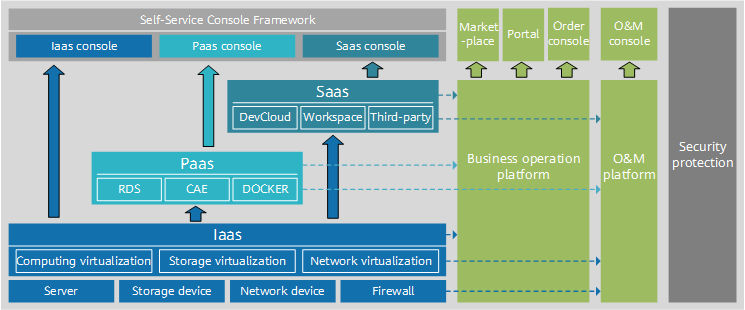

公有云
公有云是指第三方提供商通过公共Internet为用户提供的云服务，用户可以通过Internet访问云并享受各类服务，包括并不限于计算、存储、网络等。公有云服务的模式可以是免费或按量付费。
1. 公有云的特点和价值¶
公有云的核心属性是共享资源服务。第三方提供商将共享的计算、存储、网络等资源按需提供给用户。对于用户来说，由于不需要进行初始IT基础设施投资就可以通过按需付费的方式享受IT服务，数字化门槛和IT成本都大幅降低。
对于多数中小型企业或初创型企业而言，上公有云是最佳选择：
- 从运营的角度来看，公有云能够按需提供用户所需资源，计量收费，降低TCO，达到节省成本的目的。尤其对于中小型企业来说，没有充足的预算购买设备、短时间使用并释放（测试、验证等）、需要超大规模计算能力等都可以通过公有云满足。
- 从运维的角度来看，传统的企业通过自建数据中心来支撑自身业务，而自建带来的工作量就要包括基础设施（包括风火水电、服务器、存储、交换机、防火墙等等）、系统、中间件服务等等。维护复杂且支出庞大。而通过使用公有云，用户将不需要关注上述问题，只需要关注自身业务即可，大大减轻了维护的复杂度及维护开支，转而聚焦业务持续创新。
- 从服务的角度来看，公有云提供种类繁多的服务，使用户可以尽情享用云带来的便利。
- 从安全的角度来看，当前主流的公有云服务提供商的安全等级往往是大部分企业无法达到的。主流的公有云提供商提供服务通过了大部分安全及隐私等级认证，能够高效保障用户的数据及隐私安全。
2. 公有云的架构¶
公有云常见的架构如下图所示，包含包含IaaS（Infrastructure as a Service，基础设施即服务）、PaaS（Platform as a Service，平台即服务）、SaaS（Software as a Service，软件即服务）、运维、运营、安全六大部分。
- IaaS层主要是将计算、存储、网络资源的抽象化后将资源提供给用户使用，并根据实际运用需求，提供对应服务。
- PaaS层基于IaaS层为用户提供容器服务、微服务开发等服务，即将一个开放平台作为服务提供给用户。
- SaaS层主要提供场景化的应用，即将应用作为服务提供给用户。
- 在运维层面，公有云提供面向用户侧和面向平台侧的运维能力。公有云为使用云服务的用户提供用户运维能力，例如权限控制、性能监控，状态监控，故障告警等。而在平台侧，是由公有云保障团队进行运维，保障平台的高可靠性、高可用性及安全性等。
- 在运营层面，公有云提供面向用户侧和面向平台侧的运营能力。用户拥有提交工单、订单、计费等运营能力，以协助用户了解运营成本、分析业务趋势。公有云运营团队对用户的工单、投资进行处理与管控，同时对于公有云的整体收入进行可视化管理。
- 在安全层面，公有云需要提供系统安全、平台安全、运维安全及网络安全等方面需求，以保障用户及云服务提供商的数据财产安全。

公有云常见架构
{kind=link}
3. 公有云与私有云的比较¶
企业部署云计算服务的模式有三大类：公有云、私有云、混合云。其中，私有云是企业自己建设的为企业内部提供服务的一种云计算使用方式。私有云为一个企业单独使用而构建，可部署在企业的数据中心中，也可统一部署在云平台业务提供商的机房。
3.1. 总体对比¶
与私有云相比，公有云具备以下优点：
- 更高的弹性和可扩展性：使用公共云，客户可以快速订购计算、存储和网络资源来应对激增的业务需求，而无需购买和部署新的硬件。
- 更低的进入成本：大多数客户可以无需添加自己的物理基础设施就可以使用公共云服务。
- 更快地获取最新技术：在许多情况下，与客户自己购买和安装硬件和软件相比，公有云提供商能够更快地提供最新的硬件和软件，及其对应的升级更新。
与公有云相比，私有云的安全性更好，但成本也更高，且私有云整个基础设施的平均利用率要低于公有云。
3.2. 建设与运行模式对比¶
- 公有云是一种新的IT能力消费模式，公有云的用户只需关注云服务所提供的能力和SLA，并不关注背后的资源所在地，以及建设、交付、运维等问题。公有云用户可以快速租用资源，部署自己的业务，前期投入低，业务上线周期短。在运维层面，公有云提供商提供大部分运维服务，公有云用户只需要关注自身的应用。
- 私有云的资产归属该组织拥有，由该组织主导云的建设、管理和维护，部署在该组织内部的数据中心。私有云前期建设投入成本较多，建设和调试周期较长。私有云的运维一般需要该组织自身完成。
3.3. 架构对比¶
从架构上看，一般认为私有云的IaaS、PaaS能力是公有云IaaS层、PaaS层能力的子集。由于私有云是满足某组织的具体业务需求构建的，因此不需要将IaaS、PaaS的能力全部都纳入私有云，该组织不使用的能力，可以不部署。例如该组织只使用虚拟机服务，不使用裸金属服务，则该私有云中可以不部署裸金属服务。
公有云架构中除了IaaS、PaaS以外，还有SaaS、运营等主要能力。
- 公有云一般均提供SaaS能力，但是在私有云中，却不一定会部署SaaS软件。当SaaS软件私有化部署后，私有云拥有者需要投入大量的资源去维护SaaS软件，在成本上比使用公有云版本的纯SaaS服务要高得多。在实际部署中，不论是公有云、私有云、混合云，其部署都是基于不同客户的需求制定的SaaS实施方案，主要取决于客户对于安全、成本、维护等各个因素的综合考虑。
- 由于私有云的私有属性，在私有云的组织内部一般不涉及费用计算问题，此时不涉及运营。而公有云需通过各种模式向其用户收费，因此其运营能力是必选项。
3.4. 业务类型对比¶
- 公有云中一般部署非核心业务、需要快速迭代的业务、对外部提供服务的业务。
- 私有云中一般部署该组织的核心业务、设涉及到信息安全等级高的业务。
综上所述，公有云与私有云的主要对比如下表所示。
| 对比项 | 公有云 | 私有云 |
|---|---|---|
| 用户类型 | 创业公司、小型公司、个人 | 政府、大企业 |
| 业务类型 | 对外提供交互的业务 | 组织内部业务 |
| 安全 | 主机层面实现安全隔离 | 网络层面实现安全隔离 |
| 成本 | 初期成本低，后期当业务量大时，成本较高 | 初期成本高，随着业务量增加，后期平均成本低 |
| 定制 | 很少定制 | 灵活定制，可与现有系统进行集成 |
| 技术架构 | 自研架构、主要关注分布式、大集群 | 开源架构，主要关注高可用，灵活性 |
| 兼容性 | 根据公有云的要求来修改自身业务 | 主动兼容和适配自身业务 |
| 运维 | 用户无法自主运维，公有云服务商统一运维 | 自主运维，也可托管给第三方运维 |
参考资源